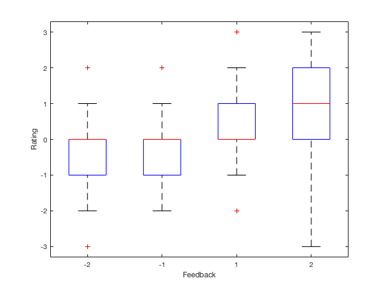
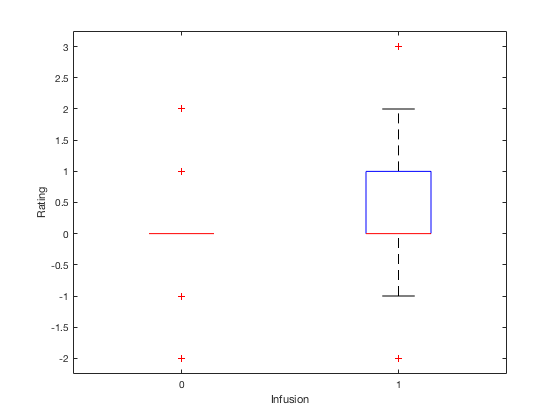

Runs multi-level models of reinforcement predicting subject ratings on Marta's placebo/neurofeedback data
Contents
read in data
cd('/Users/localadmin/Dropbox/data_projects/placebo_marta/'); load('p'); % read_nf_data % cs = []; % us = []; % for i = 1:length(feedback) % cs(i) = strcmpi(char(stim(i)),'Infusion'); % if strcmpi(char(feedback(i)),'100% Pos Feedback'); % us(i) = 2; % elseif strcmpi(char(feedback(i)),'50% Pos Feedback'); % us(i) = 1; % elseif strcmpi(char(feedback(i)),'50% Neg Feedback'); % us(i) = -1; % elseif strcmpi(char(feedback(i)),'100% Neg Feedback'); % us(i) = -2; % end % end % cs = logical(cs); % % nf = table(us',cs',stim,feedback,feedback_ratings,stim_ratings); % % %% write to table for LME analysis % clear p; p = table; % trials = 72; % start = 1; % for sub = 1:size(feedback_ratings,2) % p.feedback_rating(start:start+trials-1,1) = feedback_ratings(:,sub); % p.subject(start:start+trials-1,1) = sub*ones(trials,1); % p.stim_rating(start:start+trials-1,1) = stim_ratings(:,sub); % p.trial(start:start+trials-1,1) = [1:72]'; % p.stim(start:start+trials-1,1) = cs'; % p.feedback(start:start+trials-1,1) = us'; % start = start + trials; % end % p.subject = nominal(p.subject); % Sanity check figure(1); boxplot(p.feedback_rating,p.feedback); xlabel('Feedback'); ylabel('Rating'); figure(2); boxplot(p.stim_rating, p.stim); xlabel('Infusion'); ylabel('Rating'); % % % separate feedback magnitude and valence % p.feedback_mag = abs(p.feedback); % p.feedback_valence = p.feedback > 0; % % % % calculate lagged feedback representing the reward rate % p.feedbacklag = [NaN; p.feedback(1:end-1)]; % p.feedbacklag(p.trial==1) = NaN; % make sure there is no carryover from previous subject % % p.feedback_ratinglag = [NaN; p.feedback_rating(1:end-1)]; % p.feedback_ratinglag(p.trial==1) = NaN; % make sure there is no carryover from previous subject % % p.feedback_maglag = [NaN; p.feedback_mag(1:end-1)]; % p.feedback_maglag(p.trial==1) = NaN; % make sure there is no carryover from previous subject % % p.feedback_valencelag = [NaN; p.feedback_valence(1:end-1)]; % p.feedback_valencelag(p.trial==1) = NaN; % make sure there is no carryover from previous subject % % % sigmoid transform % p.feedback_rating_sigm = sigm(p.feedback_rating)'; % p.stim_rating_sigm = sigm(p.stim_rating)'; % model1 = fitlme(p,'feedback_rating ~ 1 + feedback + trial + stim*trial + (feedback*trial + stim|subject)') % anova(model1) % model2 = fitlme(p,'feedback_rating ~ 1 + feedback + trial + stim*trial + (feedback + stim|subject)') % anova(model2) 
The best model to date shows that their feedback ratings are influenced by both neurofeedback and infusion
% stim_1 - infusion feed_model = fitlme(p,'feedback_rating ~ 1 + feedback + trial + stim + (feedback + stim|subject)') % anova(feed_model) % % try with sigmoid transform -- same results % feed_model_sigm = fitlme(p,'feedback_rating_sigm ~ 1 + feedback + trial + stim + (feedback + stim|subject)') % anova(feed_model_sigm)
feed_model =
Linear mixed-effects model fit by ML
Model information:
Number of observations 1354
Fixed effects coefficients 4
Random effects coefficients 66
Covariance parameters 7
Formula:
Linear Mixed Formula with 4 predictors.
Model fit statistics:
AIC BIC LogLikelihood Deviance
3156 3213.4 -1567 3134
Fixed effects coefficients (95% CIs):
Name Estimate SE tStat DF
'(Intercept)' -0.12121 0.064458 -1.8804 1350
'trial' 0.0017538 0.00097375 1.8011 1350
'stim_1' 0.2791 0.09429 2.9601 1350
'feedback' 0.31194 0.065628 4.7532 1350
pValue Lower Upper
0.060265 -0.24766 0.0052402
0.07191 -0.00015641 0.0036641
0.0031294 0.094134 0.46407
2.2165e-06 0.1832 0.44069
Random effects covariance parameters (95% CIs):
Group: subject (22 Levels)
Name1 Name2 Type Estimate
'(Intercept)' '(Intercept)' 'std' 0.20982
'stim_1' '(Intercept)' 'corr' -0.94689
'feedback' '(Intercept)' 'corr' 0.11699
'stim_1' 'stim_1' 'std' 0.39101
'feedback' 'stim_1' 'corr' -0.041733
'feedback' 'feedback' 'std' 0.3004
Lower Upper
0.13704 0.32127
-0.99128 -0.7096
-0.37212 0.55524
0.26812 0.57022
-0.47825 0.41132
0.22051 0.40922
Group: Error
Name Estimate Lower Upper
'Res Std' 0.73807 0.71013 0.7671
There is a slight suggestion that people track their reward rate,
indicated by a NS effect of lagged feedback rating
feed_model_back = fitlme(p,'feedback_rating ~ 1 + feedback + feedback_ratinglag + trial + stim + (feedback + feedback_ratinglag + stim|subject)') % anova(feed_model_back) % % % try separating valence and magnitude % feed_model_val_mag = fitlme(p,'feedback_rating ~ 1 + feedback_mag*feedback_valence + trial + stim + (feedback_mag*feedback_valence + stim|subject)') % anova(feed_model_val_mag) % compare(feed_model,feed_model_val_mag)
feed_model_back =
Linear mixed-effects model fit by ML
Model information:
Number of observations 1277
Fixed effects coefficients 5
Random effects coefficients 88
Covariance parameters 11
Formula:
Linear Mixed Formula with 5 predictors.
Model fit statistics:
AIC BIC LogLikelihood Deviance
2951.4 3033.9 -1459.7 2919.4
Fixed effects coefficients (95% CIs):
Name Estimate SE tStat DF
'(Intercept)' -0.10621 0.060032 -1.7693 1272
'trial' 0.00095865 0.0010001 0.95853 1272
'stim_1' 0.29778 0.085137 3.4976 1272
'feedback' 0.30683 0.065407 4.6911 1272
'feedback_ratinglag' 0.079313 0.049481 1.6029 1272
pValue Lower Upper
0.077083 -0.22399 0.011558
0.33798 -0.0010034 0.0029207
0.00048562 0.13075 0.4648
3.0108e-06 0.17851 0.43515
0.10921 -0.017761 0.17639
Random effects covariance parameters (95% CIs):
Group: subject (22 Levels)
Name1 Name2 Type
'(Intercept)' '(Intercept)' 'std'
'stim_1' '(Intercept)' 'corr'
'feedback' '(Intercept)' 'corr'
'feedback_ratinglag' '(Intercept)' 'corr'
'stim_1' 'stim_1' 'std'
'feedback' 'stim_1' 'corr'
'feedback_ratinglag' 'stim_1' 'corr'
'feedback' 'feedback' 'std'
'feedback_ratinglag' 'feedback' 'corr'
'feedback_ratinglag' 'feedback_ratinglag' 'std'
Estimate Lower Upper
0.17191 0.10427 0.28342
-0.949 -0.99549 -0.53506
0.1326 -0.391 0.59135
0.70989 0.026663 0.94106
0.3409 0.22663 0.5128
0.037283 -0.43079 0.48955
-0.60991 -0.8801 -0.041316
0.29905 0.21941 0.4076
-0.2475 -0.63236 0.23534
0.19392 0.12884 0.29186
Group: Error
Name Estimate Lower Upper
'Res Std' 0.7213 0.69293 0.75083
Expectancy ratings
% they prefer infusion, but there is no evidence of learning as indicated by NS trial*stim_1 interaction exp_model = fitlme(p,'stim_rating ~ 1 + trial*stim + feedback_ratinglag + (stim + feedback_ratinglag|subject)') anova(exp_model) % check sigmoid transform -- same results % exp_model = fitlme(p,'stim_rating_sigm ~ 1 + trial*stim + feedback_ratinglag + (stim + feedback_ratinglag|subject)') % anova(exp_model) % [B,Bnames,stats] = randomEffects(model1);
exp_model =
Linear mixed-effects model fit by ML
Model information:
Number of observations 1246
Fixed effects coefficients 5
Random effects coefficients 66
Covariance parameters 7
Formula:
Linear Mixed Formula with 4 predictors.
Model fit statistics:
AIC BIC LogLikelihood Deviance
2390.3 2451.8 -1183.1 2366.3
Fixed effects coefficients (95% CIs):
Name Estimate SE tStat DF
'(Intercept)' -0.092067 0.090743 -1.0146 1241
'trial' -0.0012766 0.0011988 -1.0649 1241
'stim_1' 0.68263 0.15146 4.5069 1241
'feedback_ratinglag' 0.080513 0.027347 2.9441 1241
'trial:stim_1' -0.00042062 0.0017072 -0.24638 1241
pValue Lower Upper
0.3105 -0.27009 0.085959
0.28712 -0.0036284 0.0010753
7.199e-06 0.38548 0.97978
0.0032995 0.026861 0.13416
0.80543 -0.00377 0.0029287
Random effects covariance parameters (95% CIs):
Group: subject (22 Levels)
Name1 Name2 Type
'(Intercept)' '(Intercept)' 'std'
'stim_1' '(Intercept)' 'corr'
'feedback_ratinglag' '(Intercept)' 'corr'
'stim_1' 'stim_1' 'std'
'feedback_ratinglag' 'stim_1' 'corr'
'feedback_ratinglag' 'feedback_ratinglag' 'std'
Estimate Lower Upper
0.35108 0.25259 0.48797
-0.83543 -0.93295 -0.62369
0.66204 0.073304 0.9086
0.62233 0.45276 0.8554
-0.7812 -0.97066 0.006683
0.092214 0.054209 0.15687
Group: Error
Name Estimate Lower Upper
'Res Std' 0.59805 0.57442 0.62266
ans =
ANOVA MARGINAL TESTS: DFMETHOD = 'RESIDUAL'
Term FStat DF1 DF2 pValue
'(Intercept)' 1.0294 1 1241 0.3105
'trial' 1.134 1 1241 0.28712
'stim' 20.312 1 1241 7.199e-06
'feedback_ratinglag' 8.6676 1 1241 0.0032995
'trial:stim' 0.060701 1 1241 0.80543